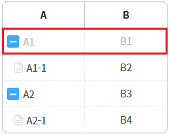
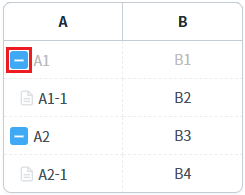
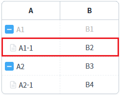
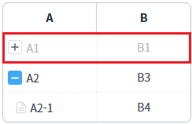
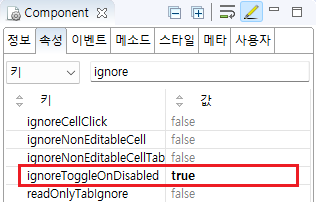

GridView의 'ignoreToggleOnDisabled' 속성의 설정을 비교한 예제입니다. 이 속성을 통해 바디 컬럼의 'inputType'이 'drilldown'으로 설정된 셀이 비활성화 상태일 때 '노드 유형' 아이콘의 기능을 비활성화할지 여부를 설정할 수 있습니다.
속성의 설정 값에 따른 동작은 다음과 같습니다.
true : 셀이 비활성화되면 확장, 축소 기능이 동작하지 않습니다. 셀의 비활성화 여부에 따라 기능이 적용됩니다.
false : (기본 설정) 셀의 비활성화 여부와 상관없이 확장, 축소 기능이 항상 동작합니다.
셀이 비활성화 상태이면 '노드 유형' 아이콘의 기능을 비활성화
셀의 비활성화 여부와 상관없이 '노드 유형' 아이콘의 기능 활성화
예제 영역 '셀이 비활성화 상태이면 '노드 유형' 아이콘의 기능을 비활성화'에 구성된 GridView에서 테스트합니다.1
STEP 1: 초기 상태를 확인합니다.
GridView의 첫 번째 컬럼의 'inputType' 속성이 'drilldown'으로 설정되어있고, 첫 번째 행이 비활성화된 상태입니다.
Image 1.브라우저(Chrome) 실행 예시

2
STEP 2: '노드 유형' 아이콘 클릭하기
첫 번째 행의 'A' 컬럼의 노드 유형 아이콘을 클릭합니다. 첫 번째 행에 표시된 아이콘은 '축소' 아이콘입니다.
Image 2.브라우저(Chrome) 실행 예시

3
STEP 3: 실행된 결과를 확인합니다.
행이 축소되지 않습니다.
Image 3.브라우저(Chrome) 실행 예시 - GridVeiw

예제 영역 '(기본 설정) 셀의 비활성화 여부와 상관없이 '노드 유형' 아이콘의 기능 활성화'에 구성된 GridView에서 테스트합니다.1
STEP 1: 초기 상태를 확인합니다.
GridView의 첫 번째 컬럼의 'inputType' 속성이 'drilldown'으로 설정되어있고, 첫 번째 행이 비활성화된 상태입니다.
Image 4.브라우저(Chrome) 실행 예시
2
STEP 2: '노드 유형' 아이콘 클릭하기
첫 번째 행의 'A' 컬럼의 노드 유형 아이콘을 클릭합니다. 첫 번째 행에 표시된 아이콘은 '축소' 아이콘입니다.
Image 5.브라우저(Chrome) 실행 예시
3
STEP 3: 실행된 결과를 확인합니다.
하위 로우가 축소되고 첫 번째 행의 노드 유형 아이콘이 '확장' 아이콘으로 변경됩니다.
Image 6.브라우저(Chrome) 실행 예시 - GridVeiw

1
GridView의 속성을 설정합니다.
[필수] ignoreToggleOnDisabled="true"
Image 7.웹스퀘어 스튜디오의 Component View - 속성 설정 예시

Example 1.Source
<!-- GridView 본문 예시 --> <w2:gridView ignoreToggleOnDisabled="true"> <!-- 중략 --> </w2:gridView>
ignoreToggleOnDisabled